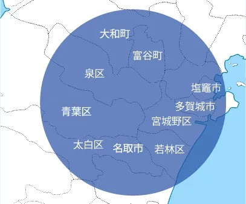

最新のお知らせをご案内します

在宅診療で
地域のご縁を繋ぎます。


「緊急時」は24時間対応（訪問診療）
患者様の環境や生活習慣に合わせて、医療を提供します
このような方は、当院にご相談ください。
通院が困難な方、要介護・寝たきりの方・がん・老衰・末期・難病など在宅で緩和ケアを希望される方、ご自宅や施設での療養を希望される方、病院ではなく最後まで住み慣れた場所で過ごしたい方、在宅医療が必要な方
芳縁会の特徴
芳縁会では、24 時間365 日の緊急往診体制で医師や看護師が直接患者様のご自宅を訪れ、その場で適切な医療サービスを提供します。定期的にご自宅での生活環境や生活習慣も把握し、よりパーソナライズされたケアを提供します。
24時間365日対応
薬の処方
高齢・がん・難病の患者にも対応
末期の看取り
ご自宅で可能な処置について
院長
やなぎさわ てるゆき
柳澤 輝行
「病気と薬」について患者様に丁寧でわかりやすい説明を心がけております。
薬理学の研究、教育、出版、市民への伝言活動とともに、友との語らいやFacebook、学びの継続を心がけ、地域医療と訪問診療に邁進します。
狭心症治療薬「ニコランジルのカリウムチャネル開口作用」の発見
「カルシウム拮抗薬・強心薬ピモベンダン」の研究
経歴
| 1982年 | 東北大学医学部卒業 |
| 1995年 | 東北大学医学部教授 |
| 2016年 | 東北大学医学部名誉教授 |
| 2023年 | 芳縁在宅診療所八幡 院長 |
「強化型在宅療養支援診療所」として認定を受けています
24時間365日、緊急往診
24時間、常時往診・訪問看護の体制を整えております。夜間でも、医師または看護師が伺います。入院することも可能です。
自宅でも安心の医療サービス
専門の医師と看護師が自宅に伺い、診療を行います。生活習慣病の予防と管理、慢性疾患の診療など幅広く対応しています。
患者に寄り添う医療
患者様の健康と安心を最優先に考えます。病気に向き合う患者様一人ひとりに寄り添い、心から安心できよう取り組みます。
「強化型在宅療養支援診療所」として
・在宅を担当する常勤医師が3名以上在籍
・「緊急時」は24時間対応
・夜間も医師または看護師が伺い診察・治療対応
・受け入れ可能な病床を確保、入院できる体制を整備
・診療所と提携し、最適な医療を提供
（あおぞら診療所ほっこり仙台、ひとつぶ診療所、星内科小児科）
芳縁在宅診療所では、以下の診察エリアを訪問いたします。
お住まいが診察エリアの範囲外の方も、遠慮なく一度お問い合わせください。

訪問診療の可能地域
仙台市全域
名取市、多賀城市、塩釜市、富谷市

「24時間365日、緊急往診」
内科・外科
| 診療時間 | 月 | 火 | 水 | 木 | 金 | 土 | 日 |
| 9:00 - 12:00 | ◯ | ◯ | ◯ | ◯ | ◯ | ー | ー |
| 13:00 - 18:00 | ◯ | ◯ | ◯ | ◯ | ◯ | ー | ー |
休診日 … 土日・祝日
TEL： 022-341-2882
FAX： 022-341-8896
〒980-0871
宮城県仙台市青葉区八幡２丁目３-６グラシアスはちまん1F

訪問診療の可能地域
仙台市全域
名取市、多賀城市、塩釜市、富谷市